Star Picket on the Game Boy Advance
How the GBA version of Star Picket works, and how to build it yourself: from a blank Rust project to a sector-patrol shooter with rotating sprites, a saved leaderboard and music your kills play.
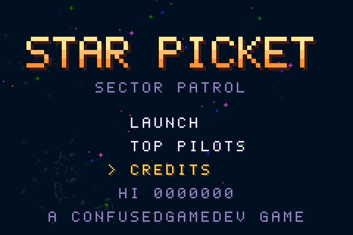
Star Picket started as a browser game. This port runs on a machine from 2001 with a 16 MHz processor, no floating-point unit and 288 KB of working RAM. Almost every feature had to be rethought for that hardware, and that's what makes it a good teaching project: each milestone exercises one part of the console.
How to read this guide
- Part 1 explains the console: what each piece of hardware does and what it can't do.
- Part 2 covers the toolkit we used, agb (a Rust library), why we picked it, and how to install it.
- Part 3 is four short lessons: text, a sprite, input, sound. Each is a complete program in
examples/that you can build and run. - Part 4 builds the game milestone by milestone. Code is quoted from
src/, sometimes trimmed; the files themselves are the reference. - Part 5 is about testing on a machine with no debugger attached.
The repository at a glance
src/main.rs the game: world, player, enemies, stations, screens, main loop
src/sound.rs the music system and sound effects
src/ui.rs text on a background layer
src/scores.rs the saved leaderboard
examples/ the four Part 3 lessons
assets/lunar/ the Lunar Battle Pack sprites (CC0), as downloaded
tools/make_gfx.py cuts the pack into GBA-sized sheets in gfx/, draws the font, logo and stations
tools/make_sfx.py synthesizes the instrument samples in sfx/
gfx/ sfx/ generated art and sound, imported at compile time
dist/ a ready-to-play ROM
docs/ this guideWhat is a Game Boy Advance?
The Game Boy Advance (GBA) is Nintendo's handheld from 2001, the successor to the Game Boy Color. It launched in Japan in March 2001 and sold about 81.5 million units across its three models: the original horizontal GBA, the clamshell GBA SP (2003), which added a lit screen and a rechargeable battery, and the small Game Boy Micro (2005).
It's often described as "a portable Super Nintendo", and that's a fair way to think about it. Like the SNES, it draws graphics with dedicated hardware that composes tiled background layers and sprites as the screen is scanned out, rather than drawing every pixel in software. Unlike the SNES, it has a modern-feeling 32-bit RISC processor that you can program in C, C++ or Rust.
That split is the key to programming it: the CPU decides what should be on screen, and the video hardware puts it there. Your game spends each frame updating positions and tables in video memory; the picture itself costs the CPU nothing.
The hardware, piece by piece
The CPU
| Part | Detail | What it means for us |
|---|---|---|
| Processor | ARM7TDMI at 16.78 MHz (224 Hz) | About 280,000 cycles per frame at 60 fps. Plenty for a 2D action game if you're careful. |
| Instruction sets | 32-bit ARM and 16-bit Thumb | Code runs from the cartridge over a 16-bit bus, so compact Thumb code is the default. Rust's target is thumbv4t-none-eabi. |
| Maths | Integer only: no floating-point unit, no hardware divide | All positions and angles use fixed-point numbers. Division is a slow software routine, so hot code avoids it. |
| Second CPU | An 8-bit Game Boy processor | Only used to run old Game Boy cartridges; GBA games can't use it. |
The memory map
Everything on the GBA is a memory address: RAM, the video chip's settings, the cartridge. Writing to
0x0400_0000 changes the display mode; writing to 0x0700_0000 moves a sprite. The regions
differ a lot in size and speed:
Two things stand out. Working memory is small: 288 KB in total, of which only 32 KB is fast. And the cartridge is huge by comparison and directly readable, so art and sound stay in ROM and are copied into video memory only when they're needed.
The display and the frame
The screen is 240×160 pixels with 15-bit colour (32,768 colours, five bits each for red, green and blue). The video hardware draws it one line at a time, top to bottom, about 59.73 times a second:
The 68 lines after the visible picture are the vertical blank (VBlank). It's the safe time to change sprite positions and palettes: change them while the screen is being drawn, and the top half of the screen shows the old frame while the bottom shows the new one ("tearing"). Every GBA game is built around this rhythm: update the game, wait for VBlank, copy the new state to the video hardware, repeat.
Tiles, backgrounds and sprites
The GBA has three bitmap modes (where VRAM is a framebuffer you draw pixels into) and three tile modes. Bitmap modes are slow for anything that moves, so nearly all games, including this one, use tile mode 0.
Tiles and palettes
Graphics are built from 8×8-pixel tiles. In 16-colour mode (4 bits per pixel), each tile picks one of 16 palettes of 16 colours; colour 0 of every palette is transparent. That's why our art pipeline has to make sure no sprite uses more than 15 colours. A 256-colour mode exists too, at twice the memory per tile.
Backgrounds
Mode 0 gives you up to four background layers. Each is a map of tile numbers, up to 64×64 tiles (512×512 pixels), that the hardware scrolls by any amount and wraps around at the edges for free. Star Picket uses three: two starfield layers scrolled at different speeds for parallax, and one for all text.
Sprites ("objects")
Anything that moves freely is a sprite. The hardware supports 128 sprites, each from 8×8 up to 64×64 pixels, stored as attributes in OAM: position, size, which tiles, which palette, priority, flips.
The feature this game leans on hardest is affine sprites: a sprite can be rotated and scaled in hardware by one of 32 transformation matrices, shared by all sprites. A "double-size" flag doubles the area the sprite may draw into, so corners aren't clipped while it turns.
There's also a time limit: the hardware has about 1,210 cycles per scanline for sprites. A normal sprite costs its width in cycles; an affine one costs about twice its width plus 10. Too many large rotating sprites on the same line and some of them flicker or vanish.
Priorities and effects
Each background and each sprite has a priority from 0 (front) to 3 (back). Sprites draw in front of backgrounds of the same priority. The display can also blend layers (transparency) or fade chosen layers towards black or white, which we use to darken the playfield behind the pause menu.
Sound
The GBA has two kinds of sound hardware:
- Four "legacy" channels from the Game Boy: two square waves, a short programmable waveform and a noise generator. They're cheap to drive and give the classic chiptune sound.
- Two Direct Sound channels that play 8-bit samples. They have no mixer: to play eight sounds at once, the game must add them together in software and feed the result to the hardware, using a timer and DMA.
Star Picket uses Direct Sound with agb's software mixer, which plays up to 8 samples at once, each at its own speed and volume. Playing a sample faster raises its pitch, and that's the basis of the music system in M8.
Input, timers, DMA and saves
- Input: a D-pad and six buttons (A, B, L, R, Start, Select), read from one register. There's no "button pressed" event: you read the state every frame and compare it with the last frame.
- Timers: four counters, used for audio timing and measuring time.
- DMA: four channels that copy memory without the CPU, used to stream audio and move graphics fast.
- Interrupts: the hardware can call your code at VBlank, at each line, when a timer fires, and so on.
- Saves: the cartridge carries its own save chip. Common types are battery-backed SRAM (32 KB, simple and fast), Flash (64 or 128 KB) and EEPROM (512 bytes or 8 KB). Emulators detect the type from a marker string in the ROM.
What that means for a game
Before writing any code, these limits shaped every design decision in the port:
| Limit | Consequence in Star Picket |
|---|---|
| 240×160 screen | You see far less of the sector than in a browser. The world shrank to about 8.5 screens across, the radar matters more, and enemy speeds had to be retuned so they're on screen at all (M11). |
| No floating point | Every position, speed and angle is a fixed-point number (interlude). |
| 128 sprites | Text goes on a background layer instead of sprites; the renderer counts sprites and stops at a budget. |
| 32 rotation matrices | Ships turn in 32 fixed steps, one shared matrix per step, so any number of ships can rotate. |
| 16-colour palettes | Each sprite gets at most 15 colours plus transparency; the art script checks this. |
| No vector drawing | The web version's neon "vector" style can't come over. The port is pixel art only. |
| No hardware mixer | Music and effects share 8 software-mixed channels; the music engine has to manage them. |
| No network | The online leaderboard became a local top ten saved on the cartridge. |
Ways to make a GBA game today
You can't run a normal operating system program on a GBA: a game is a raw cartridge image (a ROM) that the console jumps into at power-on. Homebrew developers build those with a cross-compiler and a library that wraps the hardware. The main options:
| Toolkit | Language | Character |
|---|---|---|
| devkitARM + libtonc / libgba | C | The long-standing standard. Close to the metal: you write registers yourself, guided by the excellent Tonc tutorial. |
| Butano | C++ | A full engine on top of devkitARM: sprite and background managers, asset import, audio, lots of examples. Very productive. |
| agb | Rust | A Rust library with managed sprites and backgrounds, compile-time asset import, a software audio mixer and save support. Uses Rust's own toolchain, no devkitARM. |
What agb gives you
agb ("a Game Boy Advance library") is a Rust crate. This guide uses version 0.25. These are the parts Star Picket relies on:
| Feature | agb API | Used for |
|---|---|---|
| Entry point and setup | #[agb::entry], agb::Gba | Boots the console and hands you its subsystems. |
| A frame-by-frame display | gfx.frame() … frame.commit() | Each frame you "show" sprites and backgrounds; commit waits for VBlank and applies it all. |
| Sprites | Object, ObjectAffine, AffineMatrixObject | Ships, bullets, stations; VRAM for sprite tiles is allocated and shared for you. |
| Art import | include_aseprite!, include_background_gfx! | Converts PNG files to tiles and palettes at compile time. Bad art fails the build, not the game. |
| Backgrounds | RegularBackground | The starfield layers and the text layer. |
| Sprites drawn at runtime | DynamicSprite16 | The radar, redrawn pixel by pixel. |
| Input | ButtonController | Held and "just pressed" buttons, D-pad as −1/0/+1. |
| Fixed-point maths | agb::fixnum::Num, Vector2D | Positions, speeds, angles, sine and cosine. |
| Audio | Mixer, SoundChannel, include_wav! | 8-channel software mixer with per-channel speed and volume. |
| Saves | gba.save.init_sram(…) | Crash-safe save slots, data stored with serde. |
| Effects | frame.blend() | Darkening the game behind the pause menu. |
| Debugging | agb::println!, crash screen | Logging to the emulator; a panic shows a QR code and a stack trace code. |
Why we chose agb
The first plan was Butano, which is excellent. We switched to agb for a mix of practical and technical reasons:
- It installs with Rust's own tools. Butano and libtonc need devkitARM, which is downloaded from devkitPro's
servers. The cloud machine this port was built on couldn't reach them; agb needs only
rustupand crates.io. Even on your own computer, "install Rust, run cargo" is a short setup. - Assets are checked at compile time. A sprite with too many colours, or a WAV at the wrong sample rate, is a build error with a clear message, not a garbled screen.
- The hard parts are already done: the audio mixer, VRAM allocation for sprites and tiles, the save system, and a readable crash screen.
- Rust catches mistakes early. Out-of-bounds indexing panics with a message instead of silently corrupting memory, which on a console with no debugger is the difference between an hour and a day.
Setting up the toolchain
- Install Rust with rustup. You don't need to pick a version: the project pins its own.
- Install the ROM packer, which turns the compiled program into a cartridge image with a valid header:
cargo install agb-gbafix - Install an emulator. mGBA is accurate and shows agb's log output (Tools → View Logs). On a phone, Delta (iOS) and most Android GBA emulators work too.
- Build and pack:
The first build compiles Rust's core library for the GBA and takes a minute or two.cargo build --release agb-gbafix target/thumbv4t-none-eabi/release/star-picket-retro -o dist/star-picket.gba
Three small files make this work. They're the same in any agb project:
[toolchain] channel = "nightly-2026-07-20" # pinned: a newer nightly broke a dependency components = ["rust-src"] # the core library's source, compiled for the GBA
[unstable] build-std = ["core", "alloc"] # no std on a console: just core and the allocator build-std-features = ["compiler-builtins-mem"] [build] target = "thumbv4t-none-eabi" # Thumb code for the ARM7TDMI, no operating system [target.thumbv4t-none-eabi] rustflags = ["-Clink-arg=-Tgba.ld", "-Ctarget-cpu=arm7tdmi"] # agb's linker script lays out the ROM runner = "mgba-qt" # so `cargo run` opens the emulator
[dependencies]
agb = "0.25.0"
serde = { version = "1", default-features = false, features = ["derive", "alloc"] } # for saves
[profile.release]
opt-level = 3
lto = "fat" # whole-program optimisation: smaller, faster ROM
debug = true # keeps symbols so crash codes can be decoded (they're not in the .gba)
panic = "abort"
build-std?Rust ships its standard library pre-compiled for common
platforms, not for the GBA. build-std compiles core (the language basics) and
alloc (Vec, Box) for our target. There's no std: no files, no
threads, no operating system. That's why every program starts with #![no_std].Lesson 1 · Hello, world
Four short programs teach the pieces the game is built from. Each one is a complete file in
examples/. Build and pack one like this:
cargo build --release --example 01_hello
agb-gbafix target/thumbv4t-none-eabi/release/examples/01_hello -o hello.gbaA GBA has no console to print to, so "hello world" means two things: a line in the emulator's log, and text on the actual screen. Text on screen is a background layer whose tiles are letters.
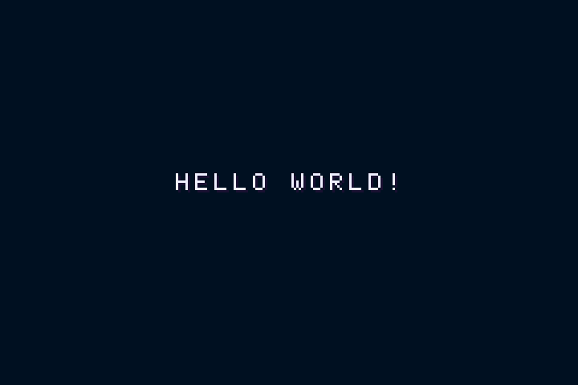
//! Lesson 1: hello, world. Puts text on a background layer and prints to the emulator's log.
//!
//! cargo build --release --example 01_hello
#![no_std]
#![no_main]
use agb::{
display::{Priority, tiled::{RegularBackground, RegularBackgroundSize, TileFormat, TileSetting}},
include_background_gfx,
};
// The font is an image with one 8x8 tile per character. The macro converts it at compile time
// into tile data plus the palettes it needs. "001020" is the colour shown where nothing is drawn.
include_background_gfx!(mod gfx, "001020", FONT => "gfx/font.png");
const GLYPHS: &str = " ABCDEFGHIJKLMNOPQRSTUVWXYZ0123456789.-:!?/><#'()_+";
#[agb::entry]
fn main(mut gba: agb::Gba) -> ! {
agb::println!("Hello from the Game Boy Advance!"); // shows up in mGBA's log window
let mut gfx = gba.graphics.get();
gfx.set_background_palettes(gfx::PALETTES);
let mut bg = RegularBackground::new(Priority::P0, RegularBackgroundSize::Background32x32, TileFormat::FourBpp);
// Each character is one tile: find its index in the font and place that tile on the map.
let text = "HELLO WORLD!";
for (i, c) in text.chars().enumerate() {
let glyph = GLYPHS.find(c).unwrap_or(0);
let tile = if glyph == 0 { TileSetting::BLANK } else { gfx::FONT.tile_settings[glyph] };
bg.set_tile((9 + i as i32, 9), &gfx::FONT.tiles, tile);
}
loop {
// every frame: describe what should be on screen, then commit it at the next vertical blank
let mut frame = gfx.frame();
bg.show(&mut frame);
frame.commit();
}
}What's going on
#![no_std]and#![no_main]: there's no operating system, so no standard library and no normalmain.#[agb::entry]marks the function the console jumps to after agb has set up memory and interrupts. It never returns (-> !): a game runs until the power goes off.include_background_gfx!runs at compile time. It reads the PNG, cuts it into 8×8 tiles, works out the palettes and embeds the result in the ROM. If the image breaks the GBA's rules, the build fails.set_tilewrites one entry of the background's map: "at column 9, row 9, show this tile".- The loop is the heartbeat every agb program shares.
gfx.frame()starts a description of the next picture;bg.show(&mut frame)adds the layer to it;frame.commit()waits for VBlank and applies everything at once.
Lesson 2 · Display a sprite
Sprites come from include_aseprite!, which reads Aseprite files or plain PNGs. Our ship sheet is a
strip of 32×32 frames, and the 32x32 prefix tells the macro to split it.
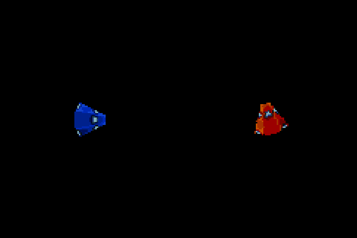
//! Lesson 2: sprites. One plain sprite, and one rotated by the hardware's affine unit.
//!
//! cargo build --release --example 02_sprite
#![no_std]
#![no_main]
use agb::{
display::{
AffineMatrix,
object::{AffineMatrixObject, AffineMode, Object, ObjectAffine, include_aseprite},
},
fixnum::{Num, num},
};
// ships.png is a strip of 32x32 frames; `32x32` tells the macro to split it into frames.
include_aseprite!(mod sprites, 32x32 "gfx/ships.png");
#[agb::entry]
fn main(mut gba: agb::Gba) -> ! {
let mut gfx = gba.graphics.get();
let mut angle: Num<i32, 8> = num!(0); // in turns: 0.25 is a quarter turn
loop {
angle = (angle + num!(0.004)).rem_euclid(num!(1));
let mut frame = gfx.frame();
// A plain object: position is its top-left corner, in pixels.
let mut plain = Object::new(sprites::SHIPS.sprite(0));
plain.set_pos((60 - 16, 80 - 16));
plain.show(&mut frame);
// An affine object: the matrix maps screen pixels back into the sprite, so a rotation by
// `angle` on screen uses the inverse rotation. AffineDouble doubles the drawing area to
// 64x64 so the corners aren't clipped while it turns, so the top-left moves by 32, not 16.
let matrix = AffineMatrixObject::new(AffineMatrix::from_rotation(-angle));
let mut spinning = ObjectAffine::new(sprites::SHIPS.sprite(3), matrix, AffineMode::AffineDouble);
spinning.set_pos((180 - 32, 80 - 32));
spinning.show(&mut frame);
frame.commit();
}
}What's going on
Object::new(sprite)copies the sprite's tiles into video memory the first time it's used and shares them afterwards, so creating a freshObjectevery frame is cheap. Objects are positioned by their top-left corner, which is why we subtract half the size.- Angles in agb are in turns: 1.0 is a full circle, 0.25 a quarter. It's a natural unit for fixed-point maths, and 32 facings are simply multiples of 1/32.
- The affine matrix describes how to go from screen pixels back to sprite pixels, the inverse of
what you'd expect. To turn a sprite by
angleon screen, usefrom_rotation(-angle). AffineMode::AffineDoublelets the 32×32 sprite draw into a 64×64 area. Without it, the corners of a rotated ship are cut off. The position then refers to the corner of the bigger area.
Lesson 3 · Read input
Input on the GBA is a register you read, not a stream of events. agb's ButtonController keeps this
frame's and last frame's state, so it can answer both "is A held?" and "was A just pressed?".
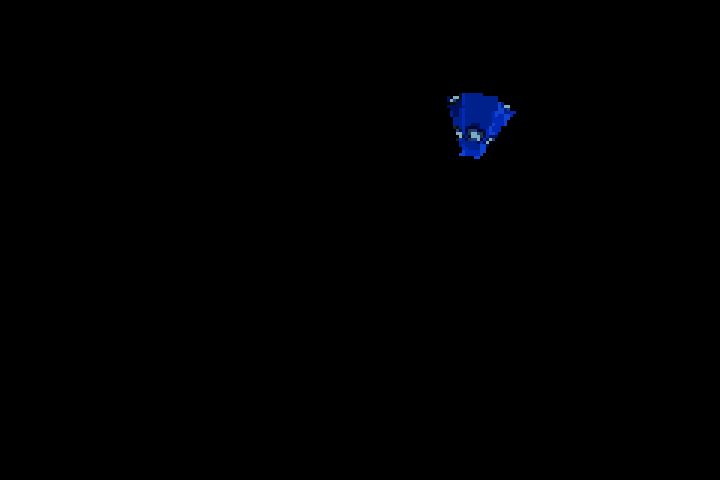
//! Lesson 3: input. Fly a ship around with the D-pad; A and B turn it.
//!
//! cargo build --release --example 03_input
#![no_std]
#![no_main]
use agb::{
display::{
AffineMatrix,
object::{AffineMatrixObject, AffineMode, ObjectAffine, include_aseprite},
},
fixnum::{Num, Vector2D, num, vec2},
input::{Button, ButtonController},
};
include_aseprite!(mod sprites, 32x32 "gfx/ships.png");
#[agb::entry]
fn main(mut gba: agb::Gba) -> ! {
let mut gfx = gba.graphics.get();
let mut input = ButtonController::new();
// fixed point: 24 bits of whole pixels and 8 of fraction, so sub-pixel speeds like 1.5 work
let mut pos: Vector2D<Num<i32, 8>> = vec2(num!(120.0), num!(80.0));
let mut angle: Num<i32, 8> = num!(0);
loop {
// read the buttons once per frame; everything else asks this snapshot
input.update();
// x_tri / y_tri are -1, 0 or +1 for the D-pad axes (y grows downwards on screen)
let step = vec2(Num::new(input.x_tri() as i32), Num::new(input.y_tri() as i32)) * num!(1.5);
pos += step;
if input.is_pressed(Button::A) { angle += num!(0.01); }
if input.is_pressed(Button::B) { angle -= num!(0.01); }
if input.is_just_pressed(Button::Start) { pos = vec2(num!(120.0), num!(80.0)); } // edge, not level
let mut frame = gfx.frame();
let matrix = AffineMatrixObject::new(AffineMatrix::from_rotation(-angle));
let mut ship = ObjectAffine::new(sprites::SHIPS.sprite(0), matrix, AffineMode::AffineDouble);
ship.set_pos((pos.x.floor() - 32, pos.y.floor() - 32));
ship.show(&mut frame);
frame.commit();
}
}What's going on
input.update()once per frame takes a snapshot; everything after it reads the snapshot.x_tri()andy_tri()turn the D-pad into −1, 0 or +1 per axis, which makes movement code short. On screen, y grows downwards.is_pressedis true for as long as the button is held;is_just_pressedonly on the frame it went down. Menus use the second, or one press would scroll through every item.- The position is
Num<i32, 8>, a fixed-point number, so the ship can move 1.5 pixels a frame. See the interlude.
Lesson 4 · Make a sound
agb's mixer plays up to 8 samples at once. The trick we'll use for music is in this lesson: play one recorded note faster or slower and you get any other note. Twelve steps of 21/12 make an octave.
//! Lesson 4: audio. A plays a note; Up/Down move it through a scale. One sample, any pitch.
//!
//! cargo build --release --example 04_audio
#![no_std]
#![no_main]
use agb::{
fixnum::Num,
include_wav,
input::{Button, ButtonController},
sound::mixer::{Frequency, SoundChannel, SoundData},
};
// The wav must be recorded at the mixer's rate (18157 Hz here) or it plays at the wrong speed.
static PLUCK: SoundData = include_wav!("sfx/pluck.wav"); // an A (440 Hz)
/// playback speed for `semitones` above the sample's pitch, as 8-bit fixed point (256 = 1x)
fn speed(semitones: i32) -> Num<u32, 8> {
const SEMI: [u32; 12] = [256, 271, 287, 304, 323, 342, 362, 384, 406, 431, 456, 483];
let (octave, step) = (semitones.div_euclid(12), SEMI[semitones.rem_euclid(12) as usize]);
let raw = if octave >= 0 { step << octave } else { step >> -octave };
// agb 0.25's mixer panics at exactly 1.5x speed; nudge that one value (see the guide)
Num::from_raw(if raw == 384 { 383 } else { raw })
}
#[agb::entry]
fn main(mut gba: agb::Gba) -> ! {
let mut gfx = gba.graphics.get();
let mut input = ButtonController::new();
let mut mixer = gba.mixer.mixer(Frequency::Hz18157);
const SCALE: [i32; 8] = [0, 2, 3, 5, 7, 8, 10, 12]; // A minor, in semitones above A
let mut degree = 0usize;
loop {
input.update();
if input.is_just_pressed(Button::Up) && degree < SCALE.len() - 1 { degree += 1; }
if input.is_just_pressed(Button::Down) && degree > 0 { degree -= 1; }
if input.is_just_pressed(Button::A) {
let mut note = SoundChannel::new(PLUCK);
note.playback(speed(SCALE[degree])).volume(Num::from_raw(200));
let _ = mixer.play_sound(note); // None if all 8 channels are busy: the note is dropped
}
let frame = gfx.frame();
// the mixer must be fed every frame or the audio stutters
mixer.frame();
frame.commit();
}
}What's going on
- The mixer runs at a fixed rate (here 18,157 Hz), and every WAV must be recorded at exactly that rate.
include_wav!checks it at compile time. mixer.frame()must run every frame. It mixes the next slice of audio into a buffer that the hardware plays during the following frame. Skip it and the sound stutters.playback(speed)resamples the note: 2.0 is an octave up, 0.5 an octave down. The table holds the twelve semitone ratios in 8-bit fixed point (256 = 1.0).play_soundreturnsNonewhen all 8 channels are busy. A normal-priority sound is then simply dropped, which is usually what you want for effects.- The odd line about
384works around a crash in agb 0.25's mixer at exactly 1.5× speed. It's the story of a real bug, told in M8.
Interlude: numbers without floats
The GBA has no floating-point hardware. Floats still compile, but every operation becomes a slow software routine. Games use fixed-point numbers instead: an ordinary integer where the lowest bits are agreed to be the fraction.
agb's Num<i32, 8> is a 32-bit integer with 8 fractional bits. The number 1.5 is stored as
1.5 × 256 = 384. Adding two of them is a plain integer add; multiplying is an integer
multiply and a shift. Precision is 1/256 of a pixel, which is plenty, and the range is about ±8 million.
type N = Num<i32, 8>; // the game's number type
type V = Vector2D<N>; // a 2D position or velocity
let speed: N = num!(1.75); // num! converts a literal at compile time
let pos = pos + dir(angle) * speed;
let whole: i32 = pos.x.floor(); // back to whole pixels for drawingNum also provides sin() and cos(), taking angles in turns, and
sqrt(). The rest of this guide uses N and V everywhere.
M1Project and art pipeline
With the basics in hand, the game starts the same way as the lessons: the three config files from
setup and a main.rs with an #[agb::entry] loop. The interesting part of
this milestone is getting art onto the console.
From an asset pack to GBA sprites
The sprites come from the Lunar Battle Pack by Matt Walkden, released as CC0 (public domain). The pack's sheets are laid out for a PC game: 64×64 cells, ships of many sizes, a star tile with an opaque navy background. The GBA wants something different, so a Python script reshapes them:
What tools/make_gfx.py does:
- Re-cuts the ships into 32×32 frames, centred, in one strip: the player, three enemy types, their three squadron leaders and the spy ship. GBA sprites must be one of twelve fixed sizes, and 32×32 fits every ship.
- Recolours a small green ship yellow for the spy, as in the web version.
- Keys out the star tiles' opaque navy so stars can be scattered over a transparent layer.
- Brightens the asteroids, which were drawn for a lit moon surface and vanished against deep space.
- Draws what the pack doesn't have: the space-station hulls and cores, the 5×7 pixel font, and the title logo.
- Counts colours in every sheet, because a 16-colour sprite may only use 15 plus transparency.
The game then imports the sheets in one place. Importing them together lets agb pack all their palettes into the 16 available:
include_aseprite!(
mod sprites,
32x32 "gfx/ships.png", // split into 32x32 frames: SHIPS.sprite(0) is the player
32x32 "gfx/explosion.png",
"gfx/bolt.png",
"gfx/missile.png",
64x64 "gfx/hulls.png",
"gfx/pod.png",
16x16 "gfx/cores.png",
"gfx/rock_big.png",
"gfx/rock_small.png",
8x8 "gfx/digits.png",
);
include_background_gfx!(
mod backdrop,
"001020", // the colour behind everything
FAR => deduplicate "gfx/stars_far.png", // deduplicate: identical tiles stored once
NEAR => deduplicate "gfx/stars_near.png",
FONT => "gfx/font.png",
LOGO => "gfx/logo.png",
);gfx/ and sfx/ is committed. You only need Python if you change the art.M2A world that wraps
Star Picket is played in a square sector that wraps around: fly off the right edge and you come back on the left. On the GBA the sector is 2048×2048 pixels, about 8.5 screens across.
Wrapping positions is easy: keep every coordinate in 0..2048. The subtle part is distance. Two ships at x = 10 and x = 2040 are 30 pixels apart, not 2030. Every "how far" and "which way" question in the game goes through one function that picks the short way round:
const WS: i32 = 2048; // the sector wraps at this size
fn wrap(v: N) -> N { v.rem_euclid(N::new(WS)) }
/// shortest signed difference across the wrapping sector
fn wd(d: N) -> N { (d + N::new(WS / 2)).rem_euclid(N::new(WS)) - N::new(WS / 2) }
fn wdv(a: V, b: V) -> V { vec2(wd(a.x - b.x), wd(a.y - b.y)) }
fn dist2(a: V, b: V) -> i32 { let d = wdv(a, b); let (x, y) = (d.x.floor(), d.y.floor()); x * x + y * y }
fn near(a: V, b: V, r: i32) -> bool { dist2(a, b) < r * r }near compares squared distances, so there's no square root in collision checks, which run hundreds of
times a frame.
The camera
The camera follows the ship with a little lead in the direction it's flying, easing towards it each frame so the
view feels smooth rather than locked on. Converting a world position to the screen is then one subtraction, done
through wdv so objects near the seam still appear in the right place:
// camera leads the ship a little
let lead = if self.p.alive { dir(self.p.a) * 38 } else { zero() };
let d = wdv(wrapv(self.p.pos + lead), self.cam);
self.cam = wrapv(self.cam + d / 12); // close 1/12 of the gap per frame
fn to_screen(&self, pos: V) -> (i32, i32) {
let d = wdv(pos, self.cam);
(d.x.floor() + SW / 2, d.y.floor() + SH / 2)
}Angles
Angles are in turns (0 = right, 0.25 = down). Steering needs "which way is that ship from me". The usual answer
is atan2, but it isn't available in fixed point, so ang_to approximates it: it finds which
eighth of the circle the target is in, then interpolates inside it. It's off by up to a few degrees, which nobody can
see in a dogfight, and costs one division.
M3Flying and shooting
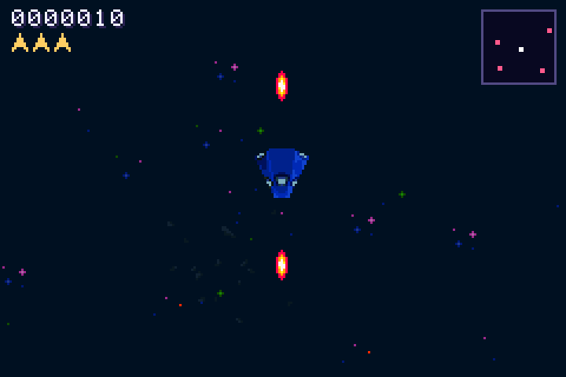
The web version steers with a touch joystick. On the GBA the D-pad picks a heading: the ship turns towards the direction you hold and speeds up, and cruises straight ahead when you let go. Guns fire automatically, one bolt forwards and one backwards, every 8 frames.
let (ix, iy) = (input.x_tri() as i32, input.y_tri() as i32);
if self.p.alive {
let steering = ix != 0 || iy != 0;
if steering {
// the D-pad direction as an angle, e.g. Up+Right is 0.875 turns
let target = ang_to(zero(), vec2(N::new(ix * 100), N::new(iy * 100)));
self.p.a = turn_toward(self.p.a, target, num!(0.02)); // at most 0.02 turns per frame
}
let target_v = if steering { num!(2.9) } else { num!(1.75) };
self.p.v += (target_v - self.p.v) / 15; // ease the speed
self.p.pos = wrapv(self.p.pos + dir(self.p.a) * self.p.v);
self.fire_t -= 1;
if self.fire_t <= 0 {
self.fire_t = 8;
let d = dir(self.p.a);
let f = facing(self.p.a);
self.bullets.push(Bullet { pos: self.p.pos + d * 9, vel: d * (num!(7.0) + self.p.v), life: 30, f });
self.bullets.push(Bullet { pos: self.p.pos - d * 7, vel: -d * (num!(7.0) - self.p.v / 2), life: 24,
f: (f + FACINGS / 2) % FACINGS });
}
}32 facings, 32 matrices
The hardware has 32 rotation matrices for all sprites together. Instead of giving each ship its own matrix (we'd run out at 32 ships), the game snaps every angle to one of 32 directions and builds one matrix per direction at startup. Any number of ships, bullets and missiles can then share them. The web version's pixel style snaps to 32 facings too, so the two versions look alike.
const FACINGS: usize = 32;
fn facing(a: N) -> usize { ((a * FACINGS as i32).round() as usize) % FACINGS }
// at startup: one rotation matrix per facing, shared by every rotated sprite
let matrices: Vec<AffineMatrixObject> = (0..FACINGS)
.map(|k| AffineMatrixObject::new(AffineMatrix::from_rotation(-N::new(k as i32) / FACINGS as i32)))
.collect();
// drawing the player: a 32x32 sprite in a 64x64 double-size box
let mut o = ObjectAffine::new(sprites::SHIPS.sprite(0), matrices[facing(g.p.a)].clone(), AffineMode::AffineDouble);
o.set_pos((s.0 - 32, s.1 - 32));AffineMatrixObject is reference-counted: cloning it is cheap, and
agb uploads each distinct matrix to OAM once per frame. 32 facings is exactly the hardware's budget.M4The starfield
The background is two tile layers of 256×256 pixels, made by scattering the pack's star and debris tiles. Background layers wrap at their edges in hardware, so a 256-pixel image repeats seamlessly forever. Scrolling the two layers at different fractions of the camera position gives parallax depth for free:
let mut far = RegularBackground::new(Priority::P3, RegularBackgroundSize::Background32x32, TileFormat::FourBpp);
far.fill_with(&backdrop::FAR);
let mut near_bg = RegularBackground::new(Priority::P2, RegularBackgroundSize::Background32x32, TileFormat::FourBpp);
near_bg.fill_with(&backdrop::NEAR);
// every frame: both layers move slower than the world, the far one slowest
far.set_scroll_pos((cam.x.floor() / 6, cam.y.floor() / 6));
near_bg.set_scroll_pos((cam.x.floor() / 2, cam.y.floor() / 2));
far.show(&mut frame);
near_bg.show(&mut frame);Priorities put the far stars at the back (3), the near stars in front of them (2), game sprites at 1, and the text layer and HUD at 0. Scrolling costs nothing: it's two register writes.
M5Stations and collisions
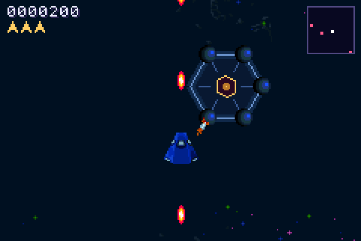
Stations are the goal of each round: destroy every one to clear the sector. A station is built from several sprites: a hull, a core in the middle, and a cannon pod on each corner. Shooting a pod twice destroys it (200 points); destroying every pod, or hitting the core enough times, destroys the station (1500).
The first version had one hexagonal design; M13 extends it to five. Each station records its pods' health and, since M13, their positions:
struct Station {
pos: V, design: usize, facing: usize, n: usize, offs: [V; 8], pods: [i8; 8], pod_flash: [u8; 8],
core: i8, core_flash: u8, alive: bool, fire_t: i32, alerted: i32,
}Bullets and what they hit
Every bullet, every frame, asks "did I hit anything?". The check runs in order of importance and stops at the first hit, with a cheap bounding-circle test before the detailed one:
fn bullet_hits(&mut self, at: V) -> bool {
for i in 0..self.stations.len() {
let s = &mut self.stations[i];
if !s.alive || !near(s.pos, at, s.reach()) { continue; } // quick reject
for k in 0..s.n {
if s.pods[k] > 0 && near(s.pos + s.offs[k], at, 8) {
s.pods[k] -= 1; s.pod_flash[k] = 5; s.alerted = 360;
// ... a destroyed pod: explosion, +200, and maybe the whole station
return true;
}
}
// ... the core
}
// ... then the spy ship, fighters, missiles, asteroids
false
}Drawing order and the sprite budget
Sprites shown earlier in a frame draw on top of later ones with the same priority. The renderer shows the HUD first, then explosions, ships, missiles, stations and asteroids, and it counts: OAM holds 128 sprites, so it stops at 124 rather than fail. In a busy Condition Red fight the last things dropped are asteroids at the edge of the screen.
let mut budget = 124usize; // OAM holds 128 objects
macro_rules! show {
($obj:expr) => { if budget > 0 { budget -= 1; $obj.show(frame); } };
}
macro_rules! world { // game objects sit behind the text layer
($obj:expr) => { $obj.set_priority(Priority::P1); show!($obj); };
}M6Missiles, asteroids and lives
When you fly within range of a station, its nearest pod launches a homing missile: it turns towards you a little each frame (slower than you can turn) and expires after about 4.5 seconds. Missiles can be shot down for 10 points.
for m in self.miss.iter_mut() {
if alive { m.a = turn_toward(m.a, ang_to(m.pos, pp), num!(0.0035)); }
m.pos = wrapv(m.pos + dir(m.a) * num!(2.15));
m.life -= 1;
if vulnerable && near(m.pos, pp, 7) { m.life = 0; hit_player = true; }
}Asteroids drift slowly and kill you on contact; shooting one gives 10 points. Explosions are an
8-frame sprite animation, each frame shown for 4 game frames. A Boom can start with a negative timer, so
a station's pods explode one after another instead of all at once.
When you die, the ship is gone for 150 frames (2.5 seconds), then respawns with 150 frames of invulnerability,
blinking, after clearing missiles and fighters that were waiting on top of it. With no lives left the game sets
over, and the screen code takes over (M9).
M7HUD and radar
The score is seven 8×8 digit sprites; lives are small amber arrows. The radar is more interesting: it's a
32×32 sprite that the game draws pixel by pixel every four frames, using agb's
DynamicSprite16. It shows the whole sector, centred on you:
fn draw_radar(g: &Game, palette: &PaletteVramSingle) -> SpriteVram {
let mut s = DynamicSprite16::new(Size::S32x32);
s.clear(1); // palette index 1: the dark field
// ... a border in index 2
let plot = |s: &mut DynamicSprite16, pos: V, c: u8, big: bool| {
let d = wdv(pos, g.p.pos); // relative to you, across the wrap
let (x, y) = (16 + d.x.floor() * 30 / WS, 16 + d.y.floor() * 30 / WS);
// ... set one pixel, or a 2x2 block for important things
};
for st in g.stations.iter().filter(|s| s.alive) { plot(&mut s, st.pos, 3, true); }
// ... missiles, fighters by type colour, the spy (blinking), and you in white
s.to_vram(palette.clone()) // upload as a new sprite
}The radar has its own 16-colour palette, defined in code as RADAR_PALETTE: index 3 is a station's
rose, 4 is your white, 6 an I-type fighter's pink, 10 the spy's yellow, and so on.
M8Music your kills play
Star Picket's signature is its soundtrack: a backing loop runs, and every kill adds a note that fits it, so a good run sounds like you're playing the melody. The web version builds this with live synthesizers. On the GBA it's built from a few short samples and the mixer.
Instruments from a script
tools/make_sfx.py synthesizes every sound with plain Python maths and writes WAVs at the mixer's
18,157 Hz: a plucked note, a bell, a bass note, kick, hi-hat, clap, explosions, the death sound and the siren.
Pitched instruments are recorded at one note only (the pluck and bell on A4, the bass on A2). The game plays
them at other speeds to get every other note, as in lesson 4.
A clock that counts 16th notes
The music runs at 124 beats per minute. At 60 frames a second that's 7.258 frames per 16th note, so the engine keeps a fixed-point counter, adds one each frame, and plays the next 16th whenever it passes 7.258:
const STEP_FRAMES: Num<i32, 8> = num!(7.258); // frames per 16th note at 124 BPM
pub fn frame(&mut self) {
self.clock += 1;
while self.clock >= STEP_FRAMES {
self.clock -= STEP_FRAMES;
let n = self.step;
self.play_step(n); // booked notes and the backing band for 16th number n
self.step += 1;
}
self.mixer.frame();
}The chords change every two bars, cycling A minor, F, C and G. Each chord's three notes, spread over three octaves, make a 9-note "ladder":
const PROG: [[i32; 3]; 4] = [[57, 60, 64], [53, 57, 60], [48, 52, 55], [55, 59, 62]]; // Am F C G, as MIDI notes
fn chord(step: u32) -> [i32; 3] { PROG[(step / 32) as usize % PROG.len()] } // 32 16ths = 2 bars
fn ladder(step: u32) -> [i32; 9] {
let c = chord(step);
let mut l = [0; 9];
for o in 0..3 { for k in 0..3 { l[o * 3 + k] = c[k] + 12 * (o as i32 + 1); } }
l
}Snapping kills to the beat
A kill doesn't play its note immediately. It books the next free 16th. Kills that land together (a mine chain, a squadron) queue up behind each other on consecutive 16ths, so a burst of kills comes out as a rapid arpeggio rather than a pile-up. An explosion "crunch" still plays instantly, so the hit feels immediate.
/// the next free 16th; crowded kills queue behind each other, up to half a bar ahead
fn book(&mut self) -> Option<u32> {
let n = self.step.max(self.slot + 1);
if n > self.step + 8 { return None; } // too crowded: skip the note (the crunch still played)
self.slot = n;
Some(n)
}
fn melody(&mut self, step: u32) -> (i32, [i32; 9]) {
let l = ladder(step);
if self.frame.wrapping_sub(self.last_kill) > 96 {
self.pos = pick3() as i32; // more than 1.6 s since the last kill: a fresh run starts low
self.dir = 1;
} else {
self.pos += self.dir; // a streak climbs the ladder, then comes back down
if self.pos >= 8 || self.pos <= 0 { self.dir = -self.dir; }
}
self.pos = self.pos.clamp(0, 8);
self.last_kill = self.frame;
(l[self.pos as usize], l)
}Different kills use the ladder differently: a fighter plays one pluck, a squadron leader a two-note chord, a cannon pod a bell an octave down, a whole squadron a run of six notes, and a station a kick, a low root note, the full chord and a run. The web version's echo effect is faked by booking the same note again three 16ths later at a third of the volume.
The backing band follows the alert condition
// Green: sparse kick and bass. Yellow: claps, 8th hats and bass. Red: four on the floor, 16th hats.
let lvl = if self.red { 2 } else if self.tense { 1 } else { 0 };
let b = n % 16; // position in the bar
if b % 8 == 0 || (lvl == 2 && b % 4 == 0) { self.now(KICK, UNPITCHED, 0, 200, false); }
if lvl >= 1 && b % 8 == 4 { self.now(CLAP, UNPITCHED, 0, 90, false); }
// ... hats and bass the same wayTwo crashes, and what they teach
The first build that went to a real player crashed after shooting an asteroid. The crash screen showed an
assertion inside agb's mixer: (total_to_play / 2 + 1) * 2 <= temp_storage.len(). Two separate bugs were
involved:
- Exactly 1.5× speed crashes. Each frame the mixer copies the part of a sample it's about to play into
a small buffer: 457 bytes at our rate. At exactly 1.5× it needs 458. That speed is a perfect fifth above the
sample's pitch, which for our A-pitched pluck is E5, and E is in two of the four chords. The fix plays that one speed
as 1.496×, five cents flat, which nobody can hear:
const SEMI: [u32; 12] = [256, 271, 287, 304, 323, 342, 362, 384, 406, 431, 456, 483]; // 2^(n/12), x256 fn rate(m: i32, base: i32) -> Num<u32, 8> { let s = m - base; let (oct, r) = (s.div_euclid(12), SEMI[s.rem_euclid(12) as usize]); let raw = if oct >= 0 { r << oct } else { r >> (-oct) }; // agb 0.25's mixer panics at exactly 1.5x speed (its copy buffer check is one byte short there), // which is a perfect fifth above the sample's pitch. 1.496x is 5 cents flat: inaudible, and safe. Num::from_raw(if raw == 384 { 383 } else { raw }) } - Too many important sounds crash too. A "high priority" sound may replace a normal one when all 8
channels are busy, but if all 8 are already high priority, agb panics instead of dropping it. Kill notes were all
high priority, so a station kill with its chord, run and echoes could get there. The engine now tracks its live
high-priority channels and caps them at 6 (7 for the death sound):
fn now_with(&mut self, data: SoundData, base: i32, m: i32, v: i16, high: bool, critical: bool) { let mixer = &mut self.mixer; self.high.retain(|id| mixer.channel(id).is_some()); // forget channels that finished let high = high && self.high.len() < if critical { 7 } else { 6 }; let mut ch = if high { SoundChannel::new_high_priority(data) } else { SoundChannel::new(data) }; if base != UNPITCHED { ch.playback(rate(m, base)); } ch.volume(vol(v)); // a low-priority sound is just dropped when every channel is busy if let Some(id) = self.mixer.play_sound(ch) && high { self.high.push(id); } }
soundcheck build that plays every
instrument at every note the game can produce. Without the fix it crashes with the player's exact error; with it,
every note passes. See testing.M9Text, menus and screens
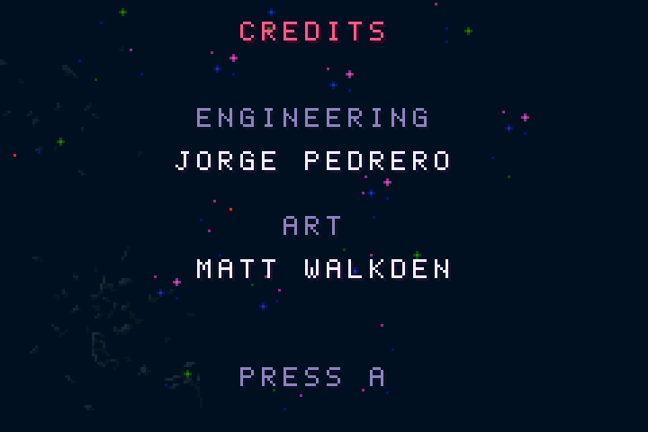
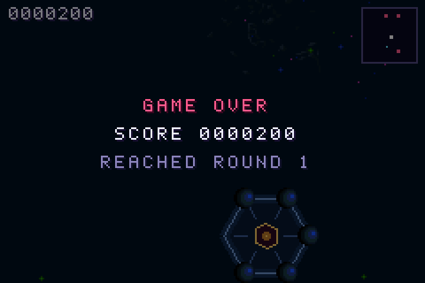
A text layer
All text lives on one background layer, the same technique as lesson 1. A tile layer can hold as much text as fits on screen at no sprite cost, which matters on a console with 128 sprites. The font image has one row per colour (white, amber, dim, rose, green), so changing a word's colour just means using tiles from another row:
/// Must match GLYPHS in tools/make_gfx.py: the font image has one 8x8 cell per glyph, one row per ink.
const GLYPHS: &str = " ABCDEFGHIJKLMNOPQRSTUVWXYZ0123456789.-:!?/><#'()_+";
pub fn put(&mut self, x: i32, y: i32, s: &str, ink: Ink) {
for (i, c) in s.chars().enumerate() {
let idx = GLYPHS.find(c.to_ascii_uppercase()).unwrap_or(0);
let tile = if idx == 0 { TileSetting::BLANK } else { self.font.tile_settings[ink as usize * GLYPHS.len() + idx] };
self.bg.set_tile((x + i as i32, y), &self.font.tiles, tile);
}
}+, and unknown characters print as blanks by design. Silent fallbacks are convenient, but check
your glyph list against your strings.Screens as a state machine
Each screen is a variant of one enum. Every frame the main loop reads input for the current screen, may switch to another, and redraws the text when it does:
enum Screen {
Title { sel: usize },
Board { highlight: Option<usize> },
Credits,
Play,
Paused { sel: usize },
GameOver { t: i32 },
Entry { name: [u8; 3], pos: usize }, // arcade-style callsign entry
}Back from Top Pilots, Credits or the pause menu's "Quit to title", you land on the title again.
Static text (titles, labels) is drawn once when a screen opens; changing text (the blinking menu cursor, banners, the condition readout) is redrawn only when it changes, because writing tiles costs time.
Darkening the game behind a menu
Behind the pause menu and Game Over, the playfield is faded towards black by the display hardware, while the text layer stays bright. It's one line per frame:
if matches!(screen, Screen::Paused { .. } | Screen::GameOver { .. }) {
frame.blend().darken(num!(0.5)).enable_background(far_id).enable_background(near_id).enable_object().enable_backdrop();
}M10Saving the leaderboard
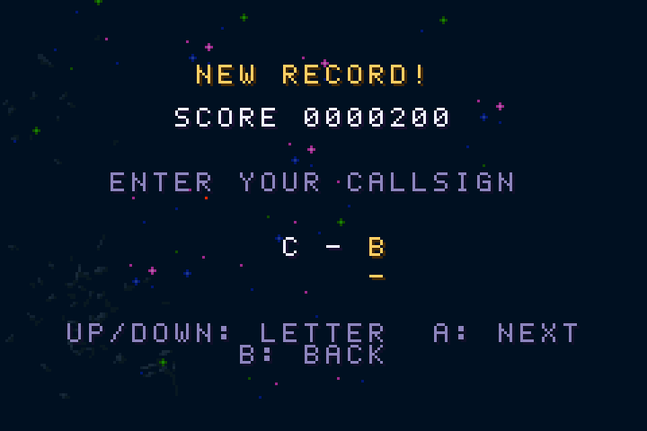
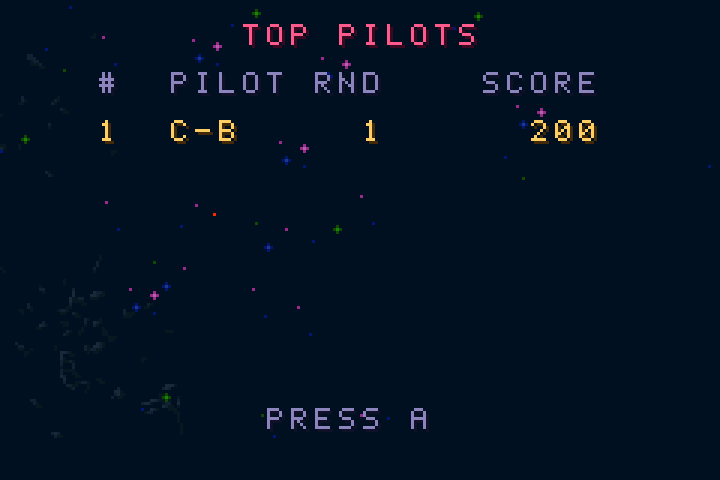
The web version posts scores to a server. The GBA has no network, so the leaderboard is the top ten kept on the
cartridge in battery-backed SRAM: 32 KB that keeps its contents while the console is off. Calling
init_sram also writes a marker into the ROM, which is how emulators and flash carts know to give the game
a save file.
#[derive(Clone, Serialize, Deserialize)]
pub struct Entry { pub name: [u8; 3], pub score: u32, pub round: u8 }
#[derive(Clone, Default, Serialize, Deserialize)]
pub struct Board {
pub entries: Vec<Entry>, // best first
pub last_name: Option<[u8; 3]>, // offered again next time
}
/// Identifies our save data; anything else in SRAM is treated as blank and reformatted.
const MAGIC: [u8; 32] = *b"STAR PICKET RETRO / TOP PILOTS 1";
pub fn open(save: &mut SaveManager) -> Self {
Store { slots: save.init_sram(1, MAGIC).ok() } // one save slot
}
pub fn load(&mut self) -> Board {
self.slots.as_mut().and_then(|s| s.read::<Board>(0).ok()).unwrap_or_default()
}
pub fn save(&mut self, board: &Board) -> bool {
self.slots.as_mut().is_some_and(|s| s.write(0, board, &()).is_ok())
}agb serialises the board with serde and writes it crash-safely: new data goes into fresh blocks
before the old copy is retired, so pulling the power mid-save can't corrupt the table. If the save can't be opened at
all, the game still runs; scores just aren't kept.
When a game ends, qualifies checks whether the score beats the tenth entry. If it does, the callsign
screen lets you pick three letters arcade-style: Up and Down change the letter, A moves on, B goes back. The new entry
is inserted in order, the table trimmed to ten and saved.
M11Fighters and squadrons
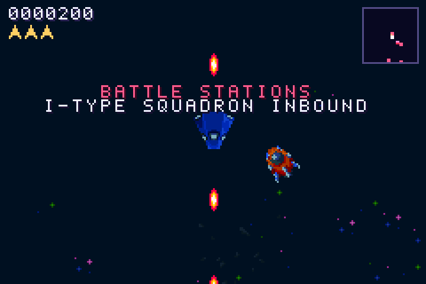
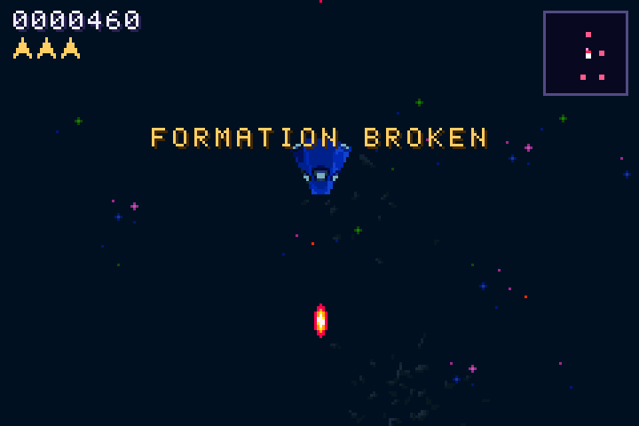
Two kinds of enemy ship hunt you:
- Lone fighters arrive from just off-screen every few seconds and fly at you.
- Squadrons: five ships in a V, launched from the nearest base with a "BATTLE STATIONS" banner. There are three types with different flying styles, and the leader is a larger ship.
// I weaves at you, P swings in from your flank like a boomerang, E is a dart that barely turns.
Kind::I => KindStats { name: "I", sp: num!(1.7), turn: num!(0.004), pts: 50, lead: 100, bonus: 500, /* … */ },
Kind::P => KindStats { name: "P", sp: num!(2.0), turn: num!(0.0064), pts: 60, lead: 120, bonus: 1000, /* … */ },
Kind::E => KindStats { name: "E", sp: num!(3.4), turn: num!(0.0009), pts: 70, lead: 140, bonus: 1500, /* … */ },
/// wingmen hold a V behind the leader, in the leader's frame (x forward, y to the side)
const SLOTS: [(i32, i32); 4] = [(-16, -14), (-16, 14), (-33, -29), (-33, 29)];Three behaviours
Each fighter is in one of three modes. Hunt: steer by type. Form: a wingman flies to its slot in the V, rotated into the leader's direction, and copies the leader's heading. Flee: when the leader dies, the wingmen turn away from you and speed up by a third until they're out of range.
Mode::Hunt => {
let target = match f.kind {
Kind::P => {
// boomerang: come in from the side, never straight down your gun line
let side = if ang_diff(pa, ang_to(pp, f.pos)) >= num!(0) { num!(0.25) } else { num!(-0.25) };
let flank = wrapv(pp + dir(pa + side) * 82);
if near(f.pos, pp, 94) { ang_to(f.pos, pp) } else { ang_to(f.pos, flank) }
}
Kind::E => ang_to(f.pos, pp), // a dart: aim and commit
Kind::I => ang_to(f.pos, pp) + f.wob.sin() * num!(0.0557), // weave either side of you
};
f.a = turn_toward(f.a, target.rem_euclid(N::new(1)), st.turn);
f.pos = wrapv(f.pos + dir(f.a) * f.sp);
}Shooting the leader breaks the formation ("FORMATION BROKEN"); shooting all five pays the squadron bonus. Fighters that hit asteroids die without scoring, as in the web version.
M12Spy ship and alert conditions
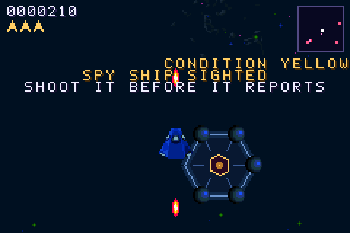
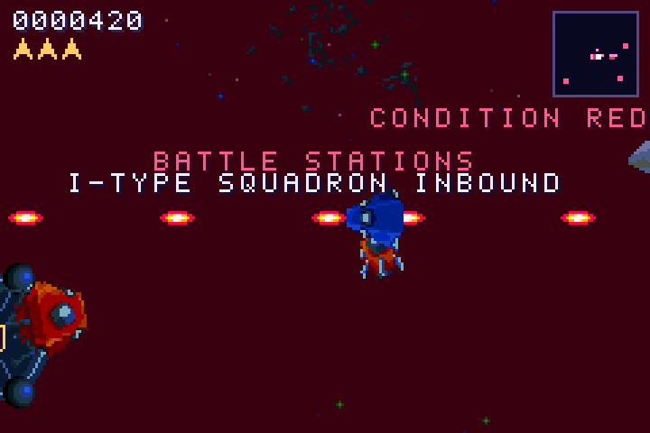
The alert condition is the game's tension dial, shown under the radar:
| Condition | When | Effect |
|---|---|---|
| Green | Nobody knows you're here | Sparse backing loop |
| Yellow | A base has noticed you, ships are near, a squadron or the spy is out; and always after 30 s | Busier band |
| Red | You linger (85 s, falling to 50 s in later rounds), or the spy escapes | Until the sector is cleared: up to 26 lone fighters, three squadrons at a time, faster ships, a siren, a throbbing red backdrop |
The clock can only raise the condition; within Yellow it rises and falls with what's around you:
fn update_cond(&mut self) {
self.round_t += 1;
let (yellow_at, red_at) = (1800, (5100 - self.round * 150).max(3000)); // 30 s; 85 s falling to 50 s
if self.round_t > red_at && self.cond < RED { self.set_cond(RED, Why::TooLong); }
else if self.round_t > yellow_at && self.cond_min < YELLOW { self.cond_min = YELLOW; self.set_cond(YELLOW, Why::Noticed); }
if self.cond == RED { return; }
// otherwise Yellow is situational: a base that has noticed you, ships near you, a squadron or the spy
let pp = self.p.pos;
let threat = self.cond_min == YELLOW
|| self.stations.iter().any(|s| s.alive && s.alerted > 0)
|| self.fighters.iter().any(|f| !f.dead && near(f.pos, pp, 286))
|| !self.squads.is_empty()
|| self.spy.is_some();
self.cond = if threat { YELLOW } else { GREEN };
}The spy ship
The spy circles you at a distance, glides away and swings back for another look. If it's far away for more than 1.2 seconds, that counts as a "pass"; after three passes it escapes and reports your position, which sends the sector to Condition Red. Shooting it scores 200, then 400, then 800 for consecutive spies.
A red backdrop with one palette write
Condition Red tints everything behind the stars by changing one colour: colour 0 of background palette 0, which the hardware shows wherever no layer draws anything. A sine wave makes it throb:
let throb = if matches!(screen, Screen::Play) && g.cond == RED {
let pulse = (N::new((t % 64) as i32) / 64).sin() + num!(1); // 0..2 over 64 frames
(pulse * 36).floor() as u16 + 20
} else { 0 };
gfx.set_background_palette_colour(0, 0, rgb(throb, 16u16.saturating_sub(throb / 4), 32u16.saturating_sub(throb / 6)));M13Five station designs
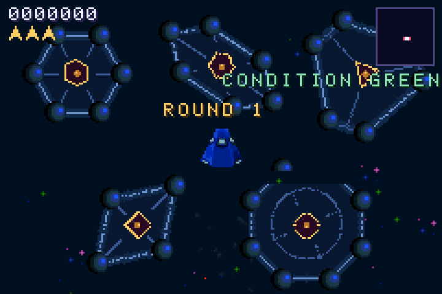
The last milestone gives stations variety, matching the web version's five designs. A design is a table: where the pods are (before rotation), how tough the core is, how fast it fires and how many missiles at once:
struct Design { pods: &'static [(i32, i32)], core: i8, core_frame: usize, fire_pct: i32, volley: usize }
const DESIGNS: [Design; 5] = [
// the original six-pod hexagon
Design { pods: &[(24, 0), (12, 21), (-12, 21), (-24, 0), (-12, -21), (12, -21)], core: 3, core_frame: 0, fire_pct: 100, volley: 1 },
// lance: a long hull, a cannon at each tip
Design { pods: &[(-34, 0), (-17, -15), (17, -15), (34, 0), (17, 15), (-17, 15)], core: 3, core_frame: 0, fire_pct: 100, volley: 1 },
// trident: three arms, each ending in a fork of two pods
Design { pods: &[(-10, -30), (10, -30), (31, 6), (21, 24), (-21, 24), (-31, 6)], core: 3, core_frame: 2, fire_pct: 100, volley: 1 },
// diamond: small, a fragile core, but it fires faster
Design { pods: &[(30, 0), (0, -20), (-30, 0), (0, 20)], core: 2, core_frame: 4, fire_pct: 70, volley: 1 },
// crown: eight pods, a tougher core, and it fires missiles in pairs
Design { pods: &[(30, 12), (12, 30), (-12, 30), (-30, 12), (-30, -12), (-12, -30), (12, -30), (30, -12)], core: 4, core_frame: 6, fire_pct: 115, volley: 2 },
];The same pod list lives in tools/make_gfx.py, which draws each hull as the polygon through its pods
plus its own inner structure. Keeping the two in step is the one manual rule of this milestone.
Rotating a station made of many sprites
Each station picks a random facing. The hull and core are affine sprites using the same 32 shared matrices as the ships. The pods are plain sprites (round turrets look the same at any angle), so their positions are rotated instead, once, when the station is created:
fn rotate(v: (i32, i32), a: N) -> V { let d = dir(a); vec2(d.x * v.0 - d.y * v.1, d.y * v.0 + d.x * v.1) }
fn new(pos: V, design: usize, facing: usize) -> Self {
let d = &DESIGNS[design];
let a = N::new(facing as i32) / FACINGS as i32;
let mut offs = [vec2(N::new(0), N::new(0)); 8];
let mut pods = [0; 8];
for (k, &p) in d.pods.iter().enumerate() { offs[k] = rotate(p, a); pods[k] = 2; }
// ...
}Because collision checks, missile launches and drawing all read offs, rotation costs nothing after
creation. Designs are dealt from a shuffled deck per sector, so a sector always mixes them; Trident joins in round 2
and Crown in round 3.
Testing and debugging
There's no debugger attached to a GBA. Everything in this port was tested with an emulator, a log, and builds that set up the situation you want to look at.
Logging
agb::println! writes to mGBA's log (Tools → View Logs, or -l 255 on the command line).
It's how the "invisible enemies" problem in M11 was found: a temporary line printing every
fighter's position twice a second showed them chasing correctly, just too far away to see.
The crash screen
When a Rust program panics, agb shows the panic message, a QR code and a short code such as
9A4AIwAMu98cUBqHA6v1. That code is an encoded stack trace. With the ELF file from the same build, agb's
tool turns it back into function names and line numbers:
cargo install agb-debug
agb-debug target/thumbv4t-none-eabi/release/star-picket-retro 9A4AIwAMu98cUBqHA6v1This is why the release profile keeps debug = true: the symbols stay in the ELF, never in the
.gba players get. It needs the ELF from that exact build, so keep it alongside any ROM you hand
out.
Test builds
Cargo features switch on situations that are slow to reach by playing. None of them are in the normal build:
| Feature | What it does |
|---|---|
showcase | Parks a station right in front of you, launches a squadron within a second, sends the spy at 2 s and Condition Red at 15 s. |
quickover | One ship that explodes 3 seconds in, to test Game Over, callsign entry and saving. |
gallery | Freezes round 1 with one of each station design around you. |
soundcheck | Plays every pitched instrument at every note the game can produce, one note per frame, and logs the result. |
cargo build --release --features showcase
agb-gbafix target/thumbv4t-none-eabi/release/star-picket-retro -o showcase.gbaAutomated play
This port was developed on a headless Linux machine, so every screenshot in this guide was taken by a script:
mGBA running in a virtual X display (Xvfb), key presses sent with xdotool (mGBA's default keys
are the arrows, X for A, Z for B, Enter for Start), and screenshots with ImageMagick's
import. The same setup ran a 60-second random-input stress test after each milestone, checking the log
for panics.
Sound was checked the same way: SDL's "disk" audio driver writes the emulator's output to a file, which a short Python script analyses for loudness and note timing. That's how we confirmed the kick drum lands exactly on the 124 BPM grid, which also proves the game holds 60 frames a second, since the music clock counts frames.
SDL_AUDIODRIVER=disk SDL_DISKAUDIOFILE=out.raw mgba -3 dist/star-picket.gba # 16-bit stereo, 44.1 kHzWhere to go next
The web version still has features the port doesn't:
- Mines that explode in chains, taking nearby ships with them. Their chain reactions would feed the music system nicely: simultaneous kills already become arpeggios.
- Voice callouts ("Condition red!", "Battle stations!"). They'd be short recorded samples played through the mixer, competing with the music for its 8 channels.
- Score pop-ups where things explode. Text sprites would cost sprite budget, so they'd need a cap.
Ideas that suit the GBA in particular: rumble-free "screen shake" by nudging the background scroll registers, a two-player link-cable mode, and moving the hottest maths (collision checks) to fast IWRAM.
References
- GBATEK: the definitive GBA hardware reference: every register, timing and quirk.
- Tonc: the classic GBA programming tutorial (C), excellent for understanding what agb does for you.
- agbrs.dev: agb's book and interactive examples; docs.rs/agb for the API.
- gbadev.net: the GBA homebrew community: tools, guides, forums.
- mGBA: the emulator used throughout.
- Lunar Battle Pack by Matt Walkden (CC0): the art.
- Star Picket: the original web version.
Star Picket — a ConfusedGameDev game. Engineering: Jorge Pedrero. Art: Matt Walkden.